1
入境、取行李、过海关后，来到 2F 到达大厅
办完入境手续并提取托运行李，走出海关出口即到达 T3 航站楼 2 楼到达大厅（到着ロビー）。请先把护照、手机与随身贵重物品收好，再跟随指示牌寻找电车站。
2F到达大厅
本次乘车从这里开始
本次乘车从这里开始
3F出发 / 值机大厅
乘机离开时使用（本次不用去）
乘机离开时使用（本次不用去）
B2F京急线站台
刷卡进闸后乘电梯下到此层
刷卡进闸后乘电梯下到此层
HANEDA T3 → DAIMON → OCHIAI-MINAMI-NAGASAKI
不慌不忙，跟着站名和标志走。
在大门只换一次车，就能一路直达回家。
注：上方为乘车线路示意图。
① 在羽田机场上车前，确认列车直通浅草线、停靠大门。
② 在大门站换乘时，前往4号线（六本木、新宿方向），乘坐开往「光が丘（光丘）」方向的列车直达目的地。
从 羽田T3 到达大厅出发，大概需要 75～95 分钟到达落合南长崎站。这是包含步行、候车和慢速换乘的宽松预估时间（不包含入境检查、取行李和海关时间），现场以实际电车发车时刻为准。
咱们回家路上不赶时间。使用 iPhone 苹果手机的电子交通卡（Suica 或 PASMO），卡内余额建议保持在 1,500 日元以上，方便一路直接刷手机过闸（此金额为充值建议，非本程实际票价）。进站前如有疑问，可随时请站员协助核对路线和票价。
适用于正常运营且可搭乘直通浅草线班次的时段。如遇早班、末班、列车延误或电梯维护，请向车站工作人员咨询。
办完入境手续并提取托运行李，走出海关出口即到达 T3 航站楼 2 楼到达大厅（到着ロビー）。请先把护照、手机与随身贵重物品收好，再跟随指示牌寻找电车站。
在 2F 沿着红色的 京急線 / Keikyu Line 指示牌前行，走到京急的售票机与检票闸机处。请注意：旁边另有 Tokyo Monorail（东京单轨电车） 的入口，认准红色的“京急”，不要走错。
本攻略乘坐京急线。京急车站编号为 KK16；后续线路代号：都营浅草线为 A（粉红色圈），大江户线为 E（洋红色圈）。
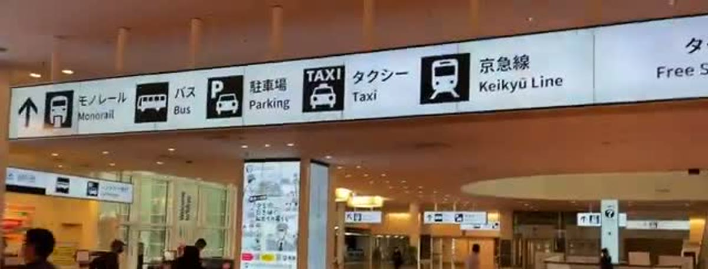
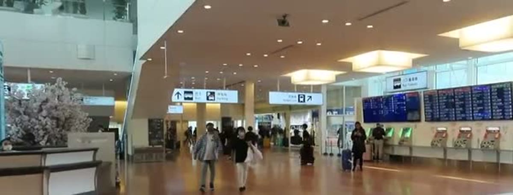
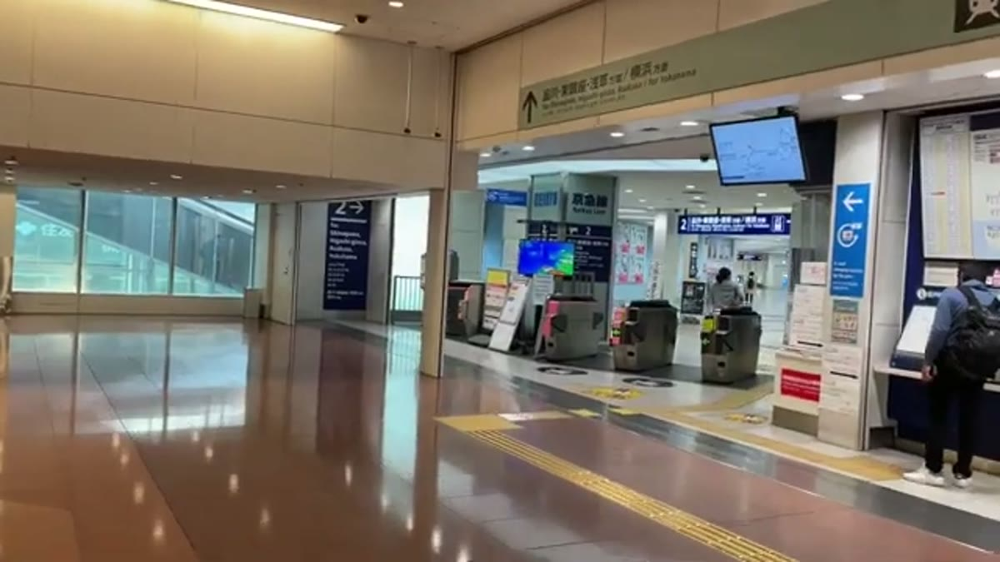
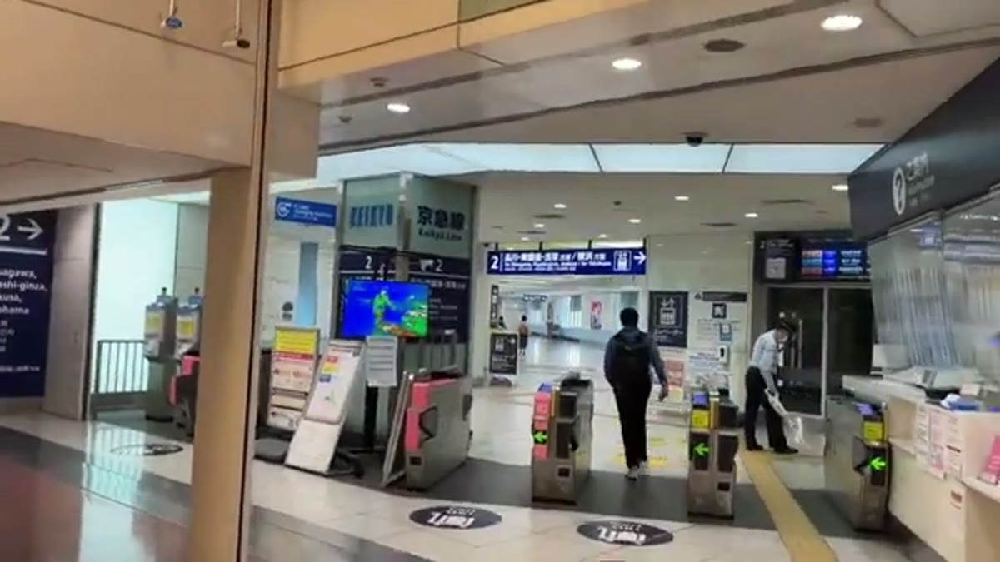
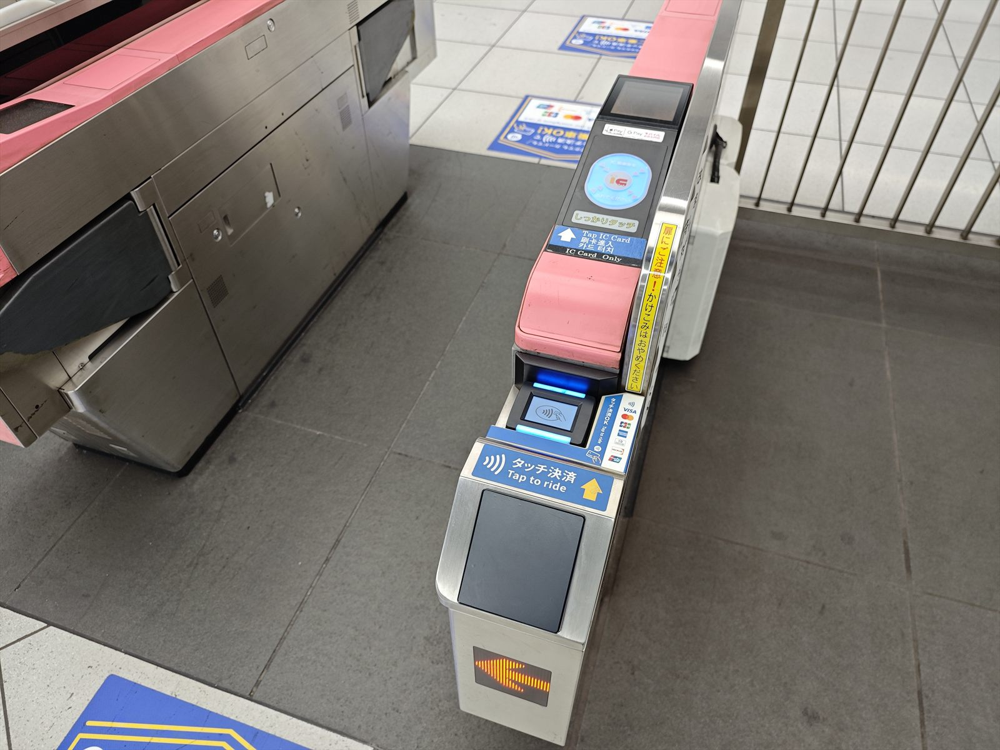
依据：京急 T3 站信息 ↗
使用 iPhone 电子交通卡过闸非常简便：无需解锁屏幕，直接将手机顶部贴近闸机上的蓝色“IC”感应区，听到清脆的“哔”声且闸门打开后即可从容走过。
若有疑问或想提前确认车次，在进闸处也可将下方日文出示给京急站员确认：
大門駅まで乗り換えなしで行きたいです。都営浅草線に直通して、大門に停まる電車はどれですか？
我想不换车坐到大门。哪一班直通都营浅草线，并且停靠大门？
提示：2F 京急闸机旁设有游客咨询中心（Tourist Information Center）；若遇非营业时间，可直接向检票口站员求助。
依据：京急官方站内设施 ↗
携带行李请优先寻找 エレベーター / Elevator（直升电梯）。跟随 2 番線、品川・東銀座・浅草方面 的指示牌，乘电梯下到 地下 2 层（B2F）。
✓ 2号线（2番線）：离开机场，开往品川 / 浅草方向（正确方向）
× 1号线（1番線）：前往羽田第 1、第 2 航站楼（国内线方向，切勿乘坐）
说明：日本电车站牌用“番線”表示轨道与乘车线，“2 番線”即“2号线”。同一站台也会停靠开往横滨方向的列车，到达 2号线 后，务必再次确认列车去向。
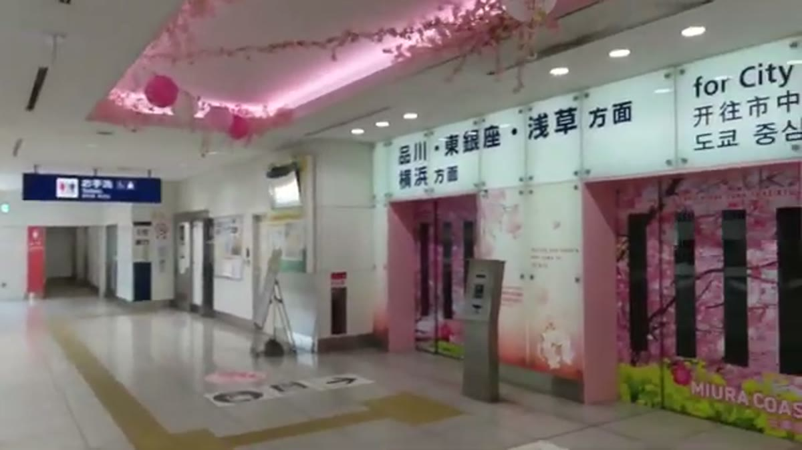
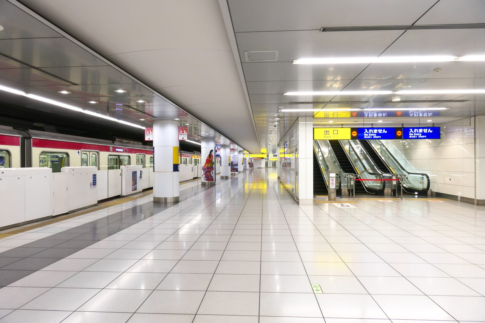
请选择站台电子屏幕或站员已确认直通都营浅草线、停靠大門 A09的列车。目的地通常写“印旛日本医大”“青砥”“成田空港”等较远站名，一般不会直接写“大门”。
切勿仅凭车身颜色或快特 / 特急字样盲目上车。“京急线与浅草线直通”并不代表每一班车都直通。
✓ 正确班次：直通浅草线，经品川、泉岳寺，停靠大门站
× 横滨 / 逗子・叶山方向：反方向列车，切勿上车
× 终点到品川或泉岳寺的区间车（车头标有“品川”或“泉岳寺”）：中途停运无法直达大门，不要乘坐
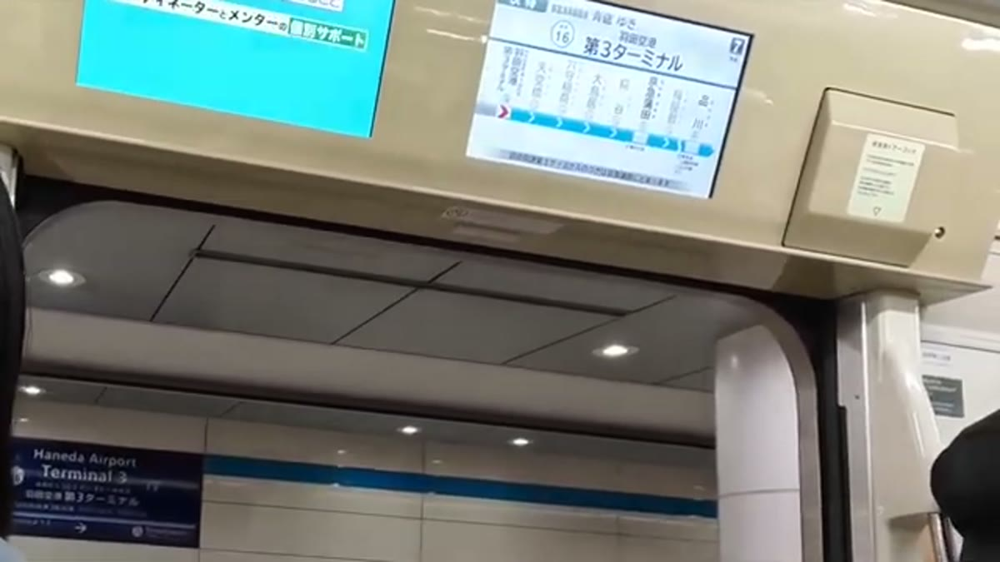
咱们回家路上不赶时间，若一时没有合适的直通车，在站台安心等候下一班即可，也可以请站员协助确认车次，从容候车最重要。
坐上直通列车后，电车会在 泉岳寺 直接驶入都营浅草线。尽管线路名称改变，但车身还是同一班列车，中途无需下车、出闸或重新刷卡，安心坐在车上即可。
不同类型列车（如快特、特急、急行等）停靠站点数量可能不同，请以车厢屏幕显示与语音报站为准。当听到或看到报站 三田（Mita） 时，可以提前收好随身物品、备好行李。下一站就是大门站，等电车停稳开门后再起身从容下车，不用着急。
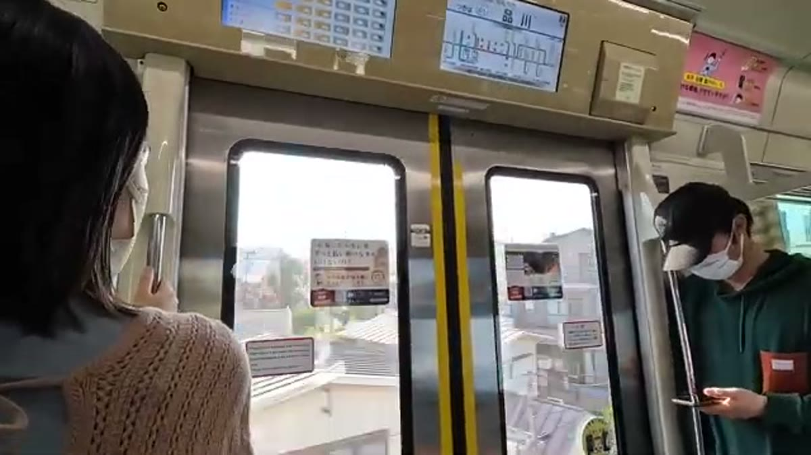
确认车厢外站名牌为 大門 / Daimon / A09，带齐全部行李下车。从羽田机场经品川开来的浅草线列车，通常停靠 2号线（押上方向）。
下车后，寻找洋红色带有 E / 都営大江戸線 的换乘指示。大门站地下通道与 JR 滨松町站相连，但换乘大江户线无需前往 JR 或单轨电车，全程在地铁车站内完成。
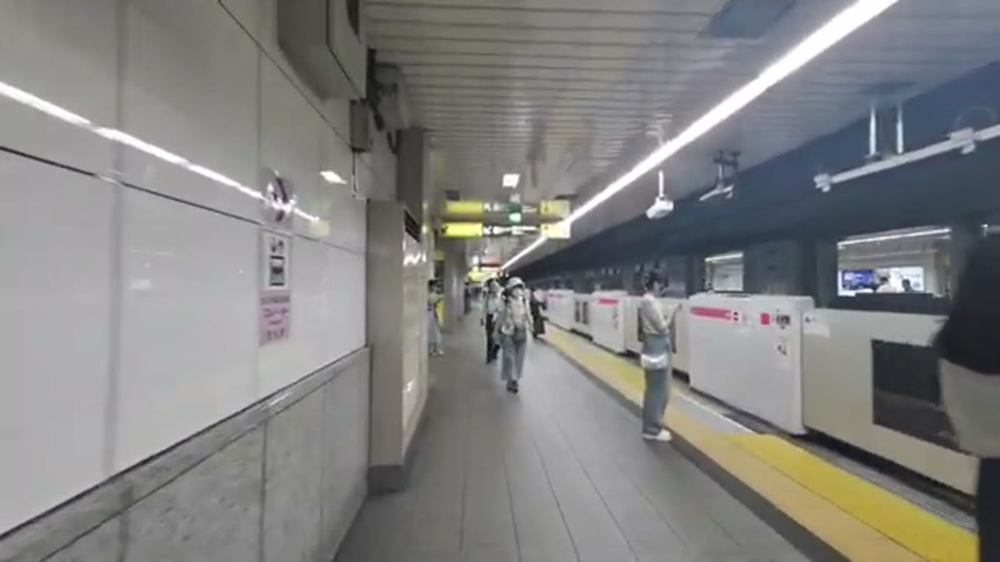
大门站若全程乘坐无障碍电梯换乘，需要经由闸机外通道，请务必先联系站员协助。若行李轻便也可选用下方的站内扶梯路线，两种走法切勿混在一起。
在浅草线站台寻找电梯旁的站员呼叫对讲设备（インターホン）或站员，说明需要使用全程电梯换乘大江户线去落合南长崎。
【特别注意】大门站全程电梯换乘需要先临时走出浅草线闸机，再乘坐连接大江户线站厅的电梯。请务必先出示下方日文给站员，由站员带领开闸协助通过，切勿自行刷手机出闸，以免被扣两次车费。
大江戸線で落合南長崎駅へ行きます。階段を使わず、エレベーターで乗り換えたいです。改札の通り方を教えてください。
我要坐大江户线去落合南长崎。想全程使用电梯，不走楼梯。请告诉我怎样通过闸机。
按站员指引乘电梯到达大江户线站厅，由站员协助进入闸机后，再乘坐直通站台的电梯下楼。大江户线站台位于地下深层，请认准站台电梯，不要误走到地面马路上。
注：电梯具体位置及闸机放行操作，以当天现场站员指引为准。
此为扶梯路线：全程在闸机内部完成换乘，不经过地面或 JR 滨松町。携带大件行李或行动不便时，请使用上面的电梯走法。
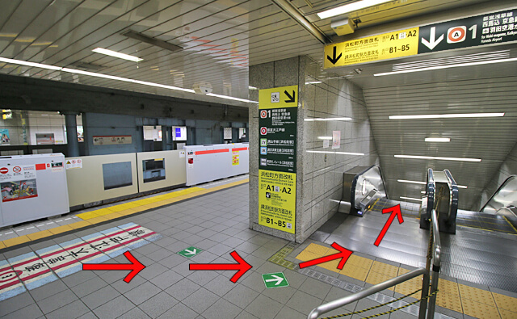
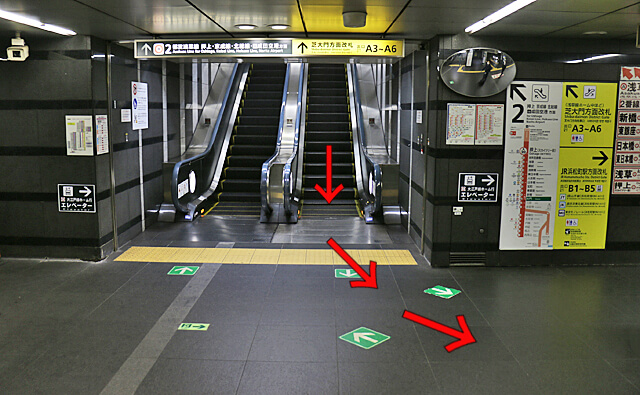
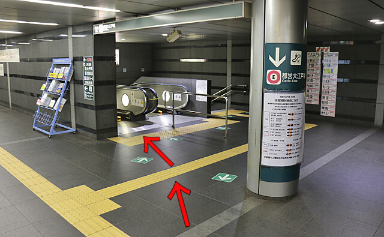
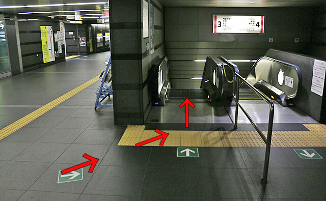
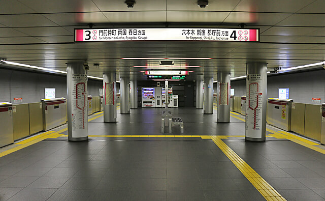
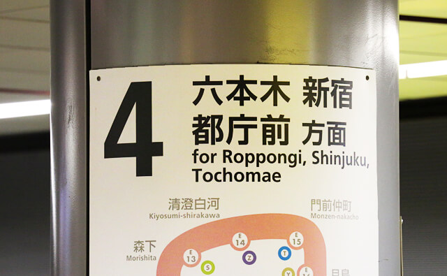
注：站内广告与商铺可能有调整，请认准线路名称与站台编号。
走电梯还是扶梯，都可以到达大江户线站台。请前往 4 号线：
✓ 4号线（4番線）：六本木、新宿、都厅、光丘方向（正确方向）
× 3号线（3番線）：汐留、两国方向（方向相反，切勿前往）
站台上方的吊牌写着“六本木・新宿・都庁前 方面”，代表运行的整体大方向；而车头外侧与站台电子屏幕上显示的“光が丘（光丘）”，则是本班列车的终点站（日文中写“光が丘行”或“光が丘行き”，即中文“开往光丘方向”的意思）。认准开往光が丘的列车即可上车。
搭乘开往“光が丘”方向的列车，中途无需在新宿或都厅前换车，一路直达。若偶尔遇到终点只到“都庁前”的区间短途车，请勿上车，在站台等候下一班开往“光が丘”的电车。
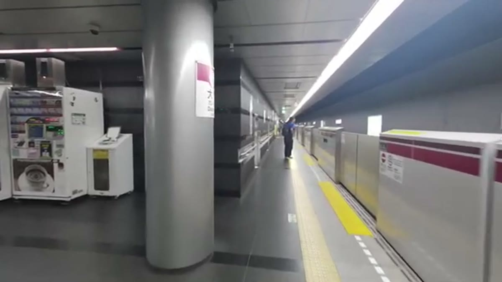
大江户线发车非常频繁（平日白天约 6 分钟一班），现场根据屏幕指示从容候车即可。咱们回家不赶时间，如果前一班车人多或刚开走，完全不用着急，安心等下一班从容上车。
大江户线为一车直达！在赤羽桥、六本木、新宿、都厅前等中途所有车站都不要下车，一直坐到目的地「落合南長崎」下车。
列车从大门站开出后，看车厢内上方的电子屏幕：开出的第一站是「赤羽橋 E21」，仅用来确认列车开行方向正确无误（若第一站显示“汐留 E19”，说明坐反了，需在下一站下车换乘反方向）。确认方向正确后，请安心坐在座位上即可。
从大门到落合南长崎共 13 站，车程约 30 分钟。全程无需换车，留意车内广播与屏幕报站。
途经顺序为：中井 E32 → 落合南長崎 E33。当列车到达中井站或车厢播报“中井”时，可以提前收好随身小包、备好行李。下一站即是目的地「落合南長崎」，等电车停稳开门后再慢慢下车，不慌不忙。
请认准五个汉字的完整站名「落合南長崎」。注意不要与东京其他带有“落合”字样的车站（如东西线“落合站”）混淆。
おちあいみなみながさき
Ochiai-minami-nagasaki
列车到达落合南长崎站的 2号线（2番線）。列车停稳车门开启后，带齐行李走下电车，离开车门区域，寻找 改札（出站闸机）/ 出口 / エレベーター（直升电梯） 标志。
携带行李请乘站台直升电梯上到站厅层。走到出站闸机处，同样将 iPhone 手机顶部贴近闸机上的蓝色感应区刷手机出站。若刷手机遇到红灯或提示余额不足，可在闸机旁直接向窗口站员求助，切勿强行推闸门。
依据：车站平面图与电梯设施 ↗
刷卡出闸机后，请直接往右手边走（认准前方 A2・A3 方向指示牌）。
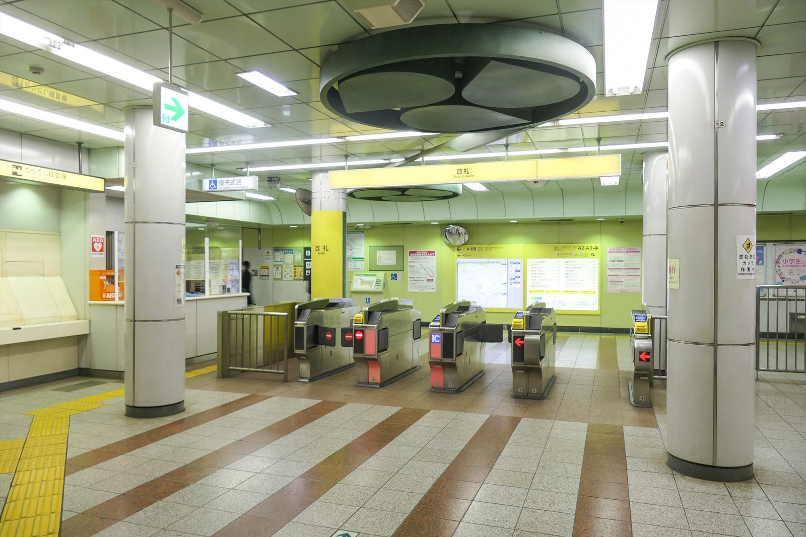
走到道路尽头处，进入尽头的小通道。穿过小通道直接进入 iTerrace 商场（アイテラス落合南長崎）与 LIFE 超市（ライフ），搭乘商场 / 超市内的直升电梯直达地面（1F），一路平整无台阶，完全不用拎行李爬楼梯。
乘电梯到达商场一楼，在此与家人碰面接应，顺利平安到家！
アイテラス（ライフ）のエレベーターから地上に出たいです。連絡通路はどちらですか？
我想从 iTerrace（LIFE 超市）的电梯出到地面，请问联络通道怎么走？
羽田空港から来ました。大門駅で都営大江戸線の光が丘行きに乗り換えて、落合南長崎駅へ行きたいです。
我从羽田机场来，想在大门换乘大江户线（开往光丘方向），去落合南长崎。
咱们回家路上不赶时间，如果行程中发现列车变动、路线不解或电梯停用，随时可将上方卡片给车站工作人员看。哪怕坐错或错过一班车也完全无需着急，站员都会耐心协助指引。
精选 6 部实景路线参考视频，建议出发前浏览一遍熟悉现场环境。回家乘车重点建议先看视频 01、03、04。点击视频封面可在 YouTube 观看（需网络连接）：
 ▶ 在 YouTube 观看
▶ 在 YouTube 观看01 / 重点参考 · 大门站换乘大江户线
大门站内从浅草线站台前往大江户线站台的实拍走法。提前熟悉地下换乘通道结构与指引标识。
nakano_dasu 制作
 ▶ 在 YouTube 观看
▶ 在 YouTube 观看02 / 以后去机场参考 · 大门站大江户线换乘浅草线
大江户线换乘浅草线（开往品川、羽田机场方向）。这是以后去机场乘机时的反方向走法，本次回家路上无需按此行走。
nakano_dasu 制作
 ▶ 在 YouTube 观看
▶ 在 YouTube 观看03 / 重点必看 · 羽田到达后乘京急线
从羽田 T3 到达大厅前往京急线闸机、进闸并下到站台的全过程实拍。若乘坐直通大门的列车，在品川千万不要下车。
M's Travel & Recreation 制作
 ▶ 在 YouTube 观看
▶ 在 YouTube 观看04 / 重点必看 · 出海关后找京急入口
T3 出海关到达大厅至京急线入口的步行全景，适合老人出关后对照现场指示牌识别入口。
東京アクセス 制作
 ▶ 在 YouTube 观看
▶ 在 YouTube 观看05 / 机场环境参考 · T3 国际出发大厅
羽田机场 T3 航站楼出发大厅实景，供提前了解航站楼结构（以后去机场乘机时使用，本次出机场回家无需前往）。
MIRU tube JAPAN 制作
 ▶ 在 YouTube 观看
▶ 在 YouTube 观看06 / 以后乘机参考 · T3 国际值机柜台
羽田机场 T3 航站楼值机柜台介绍，以后前往机场办理登机时可作参考（本次出机场回家无需前往）。
Flyyou-Tranquil Journey 制作
中文里没有“都营”这个词，它其实是日语中的特有简称：
• “都”：代表东京都（相当于北京市、上海市的“市级”政府）。
• “营”：代表经营、运营。
合起来，“都营”就是“东京都政府运营的公营地铁”，类似于国内常说的“市营地铁”或“市政地铁”。
本攻略中乘坐的「都营浅草线」（大门下车）和换乘的「都营大江户线」（直达落合南长崎），都属于同一家东京都官方地铁系统。车站进出口通常带有绿色的银杏叶图标（东京都徽）。在大门站换乘也是该系统内的地下通道换乘，因此一路跟着标志走非常顺畅。
现场找路以车站标志、当日电子屏和站员指引为准；实拍照片用于认识环境。
大门实拍图按行き方.jp 的图片使用条款 ↗下载使用，并在每张图下保留原文链接。其他照片的作者与许可见图下注明，照片保持原样。许可全文：CC BY 4.0 ↗、CC BY-SA 4.0 ↗、CC BY 3.0 ↗。本站中文步骤与路线示意为整理编写，官方车站平面图通过原站链接查看。